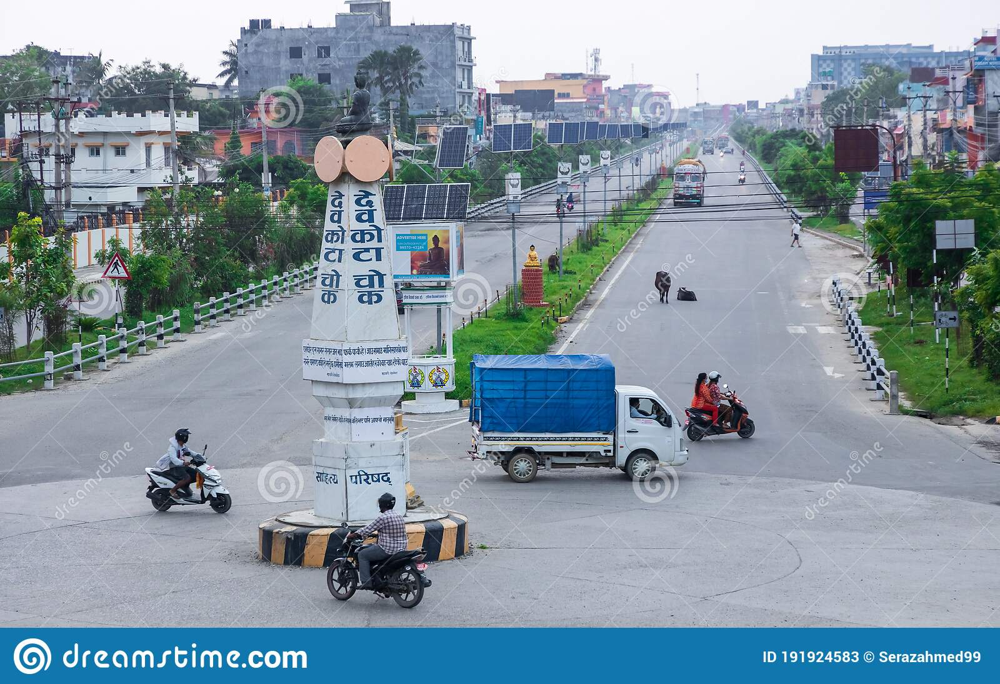

Bhairahawa, also known as Siddharthanagar, is a beautiful city in the Rupandehi district of Nepal. It is situated in the western part of Nepal and shares its borders with the Indian state of Uttar Pradesh. The city has a rich cultural and historical heritage, and it is a popular tourist destination in Nepal. In this article, we will explore Bhairahawa in detail.
Bhairahawa is situated at an altitude of 101 meters above sea level, and it is located at a distance of 283 kilometers from Kathmandu. The city has a tropical monsoon climate, with hot summers and mild winters. The temperature in Bhairahawa ranges from 20°C to 40°C during the summer months and 5°C to 25°C during the winter months.
Bhairahawa has a rich cultural heritage, and it is home to many temples, monasteries, and historical sites. The city is famous for the Maya Devi Temple, which is a UNESCO World Heritage Site. The temple is believed to be the birthplace of Lord Buddha and is visited by thousands of pilgrims every year. The city also has the Lumbini Museum, which showcases the history and culture of the region.
Bhairahawa is a popular tourist destination in Nepal, and it attracts a large number of visitors every year. The city is known for its natural beauty, historical sites, and cultural attractions. The most popular tourist attraction in Bhairahawa is the Maya Devi Temple, which is visited by thousands of pilgrims every year. The temple is surrounded by beautiful gardens and ponds, and it is a peaceful and serene place to visit. Another popular tourist attraction in Bhairahawa is the Lumbini Peace Park, which is a beautiful park that was built to commemorate the birthplace of Lord Buddha. The park is spread over an area of 52 hectares and is home to many gardens, ponds, and sculptures. The city is also famous for the World Peace Pagoda, which is a beautiful white dome-shaped structure that was built to promote peace and harmony in the world. The pagoda is located on a hilltop, and it offers stunning views of the surrounding landscape.
Bhairahawa is famous for its delicious food and cuisine. The city has many restaurants and cafes that serve a variety of local and international cuisine. Some of the popular dishes in Bhairahawa include momos, chow mein, thukpa, dal bhat, and sel roti. The city is also famous for its sweets and desserts, such as laddu, peda, and rasgulla.
Bhairahawa is well-connected to other parts of Nepal and India by road and air. The city has its own airport, which is known as the Gautam Buddha Airport. The airport is located at a distance of 3 kilometers from the city center and has regular flights to Kathmandu and other major cities in Nepal. The city is also connected to other parts of Nepal and India by road. The Mahendra Highway passes through the city, and it connects Bhairahawa to other major cities in Nepal. The city also has a bus station, from where buses and taxis are available for travel to other parts of Nepal and India.
In conclusion, Bhairahawa is a beautiful city in Nepal, which is known for its rich culture, heritage, and natural beauty. The city has many attractions for tourists, including historical sites, temples, monasteries, and natural parks. The city's proximity to the Indian border makes it a convenient entry point for travelers visiting Nepal from India. Apart from tourism, Bhairahawa is also an important economic hub in Nepal. The city has a thriving business community, and it is home to many industries, including textile, cement, and agriculture. The city's location near the Indian border has also facilitated cross-border trade and commerce, contributing to the region's economic growth. In recent years, Bhairahawa has seen significant infrastructure development, including the construction of the Gautam Buddha Airport, which has improved air connectivity to the city. The city's road network has also been improved, making it easier for tourists and locals to travel to and from the city. Despite the progress made, Bhairahawa faces some challenges. Like many cities in Nepal, Bhairahawa struggles with issues such as air pollution, waste management, and traffic congestion. The city authorities have implemented measures to address these issues, including the use of electric vehicles and the construction of waste management facilities.